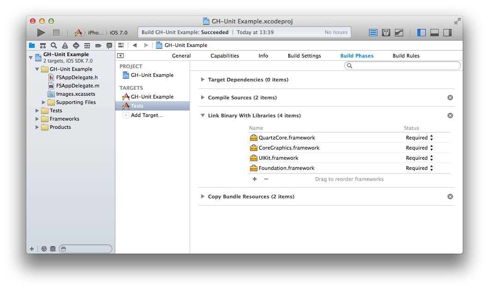
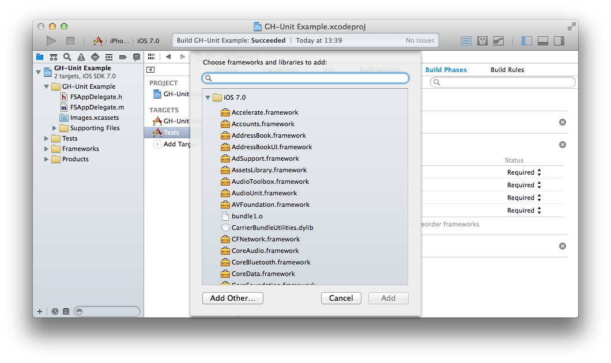
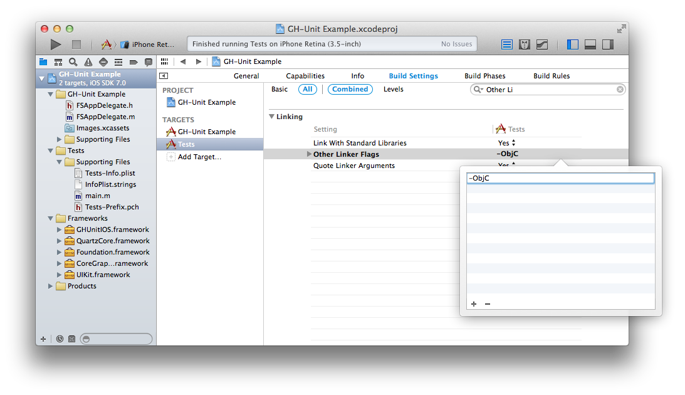
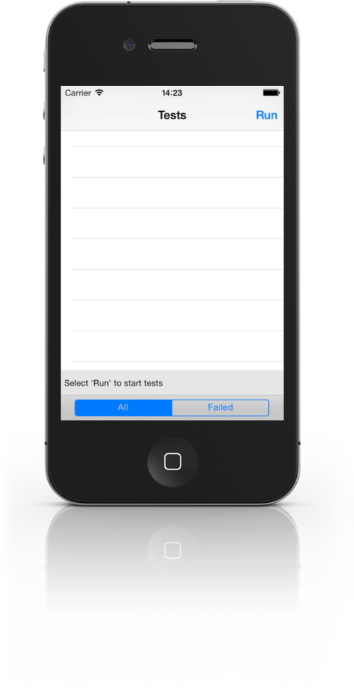

Installing in iOS (Xcode 5)
To use GHUnit in your project, you’ll need to create and configure a test target.
Create Test Target
- You’ll want to create a separate Test target. Select the project file for your app in the Project Navigator. From there, select the “Add Target…” button in the right window.

- Select iOS, Application, Empty Application. Select Next.

- Name it Tests or something similar. Select Finish.

Configure the Test Target
- Select the created Test target and select the tab “Build Phases”. Open the “Link Binary With Libraries” option and click on the “+” button.

Select
QuartzCore.frameworkand click “Add”.Download GHUnitIOS.framework and unzip it in your Test Target directory (a subdirectory of your project directory).
Select the created Test target and select the tab “Build Phases”. Open the “Link Binary With Libraries” option and click on the “+” button.

- Click “Add Other…”.

Select the
GHUnitIOS.frameworkfrom your Test Target directory.We want to enable use of Objective-C categories, which isn’t enabled for static libraries by default. In the Tests target, Build Settings, under Other Linker Flags, add
-ObjC.

- Select and delete the files from the existing Tests folder. Leave the Supporting Files folder. GHUnit will provide the application delegate below.

- In Tests folder, in Supporting Files, main.m, replace the last argument of UIApplicationMain with
@"GHUnitIOSAppDelegate". Remove the#import "AppDelegate.h"if present.

- Select the Tests target, iPhone Simulator configuration:

- Hit Run, and you’ll hopefully see the test application running (but without any tests).

Now you can create and run tests!